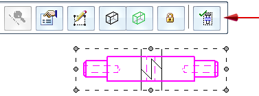
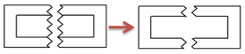
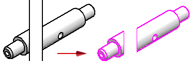

Display break lines and cropped edges in a broken view
Show break lines in a broken view
To display the break lines in a broken view:
-
Select the broken drawing view.
-
On the Drawing View Selection command bar, click the Show Broken View button
 .
.When this option is cleared, the drawing view is shown in its unbroken state. This provides access to the break lines for editing.

Show cropped edges in a broken view
To hide the break lines and show the cropped edges in the broken view:


-
Right-click the drawing view and choose Properties.
-
In the Drawing View Properties dialog box:
-
On the General page, select the Hide break lines in broken state check box.
-
On the Annotation page, select the Show boundary edges check box.
-
-
Right-click the drawing view and choose Update.
How do I
Create a broken-out section viewModify a broken-out section view
Create a broken view
Break an isometric view with a break axis
Connect a break line at a distance
Modify break lines in a broken view
Copy break lines between drawing views
Remove inherited break lines
Learn more
Broken viewsLook up more details
Broken-Out commandBroken View command
Broken View command bar
Inherit Break Lines command
Remove Break Line Inheritance command